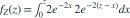

X、Y独立，均服从速率2的指数分布。Z=X+Y在z>0上的密度为？
- A
- B
- C
- D
我已思考，展开答案与解析
正确答案：A
- 卷积范围0<x<z，

。 - 被积函数为 ，积分得 。
- 这是形状2、速率2的Gamma分布。
易错提醒相加指数变量得到Gamma；取最小值才仍为指数且速率相加。
Ross · 概率模型专题 · Ross第5.2.4节 Convolutions of Exponential Random Variables
按Ross教材公开目录所列知识主题原创；未逐字摘录原书习题。
查看参考来源